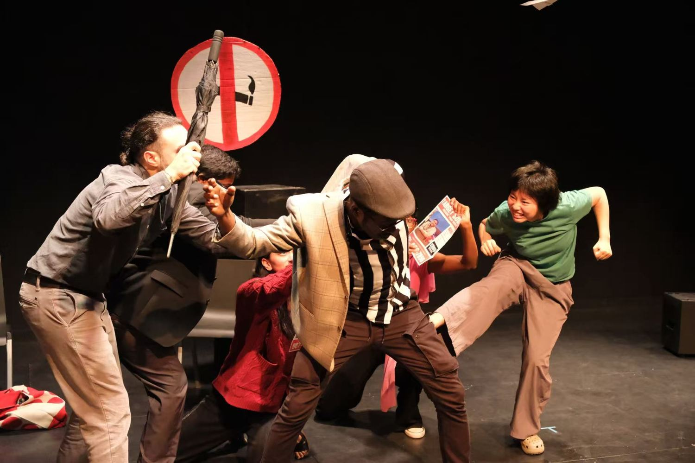
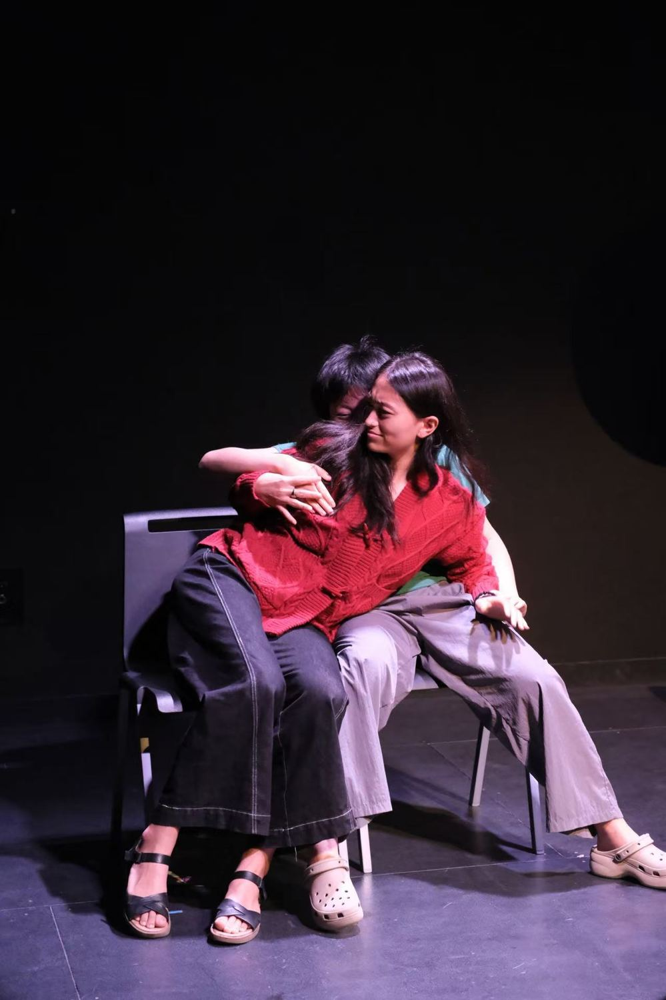
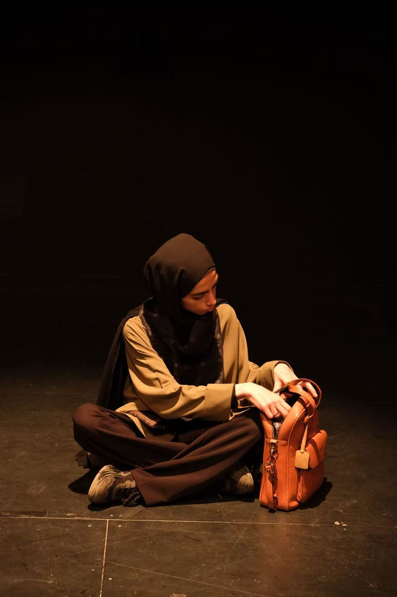
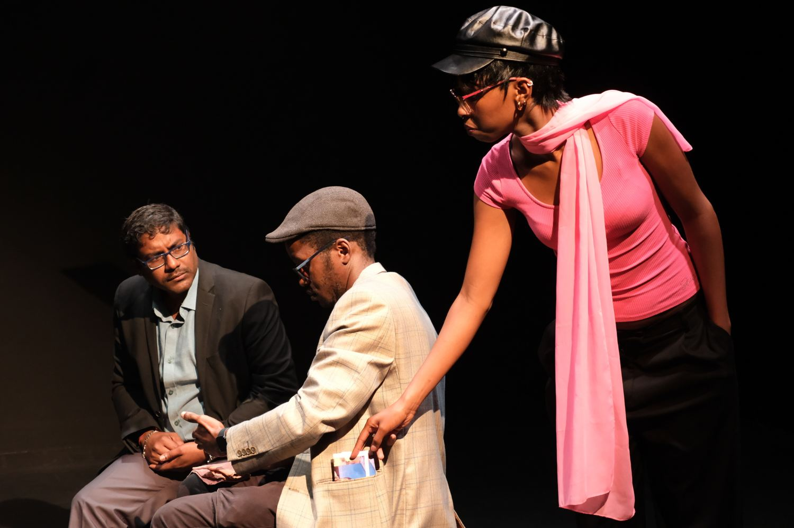
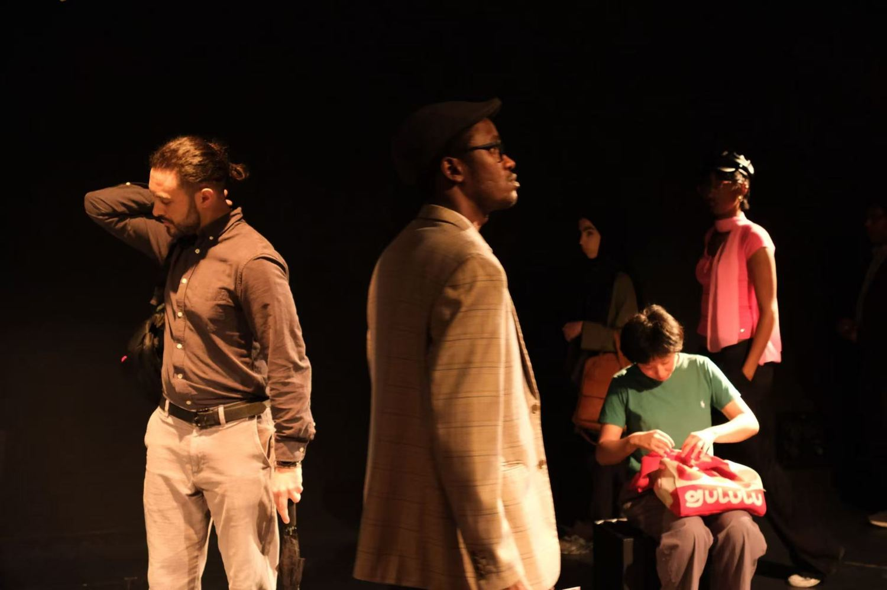
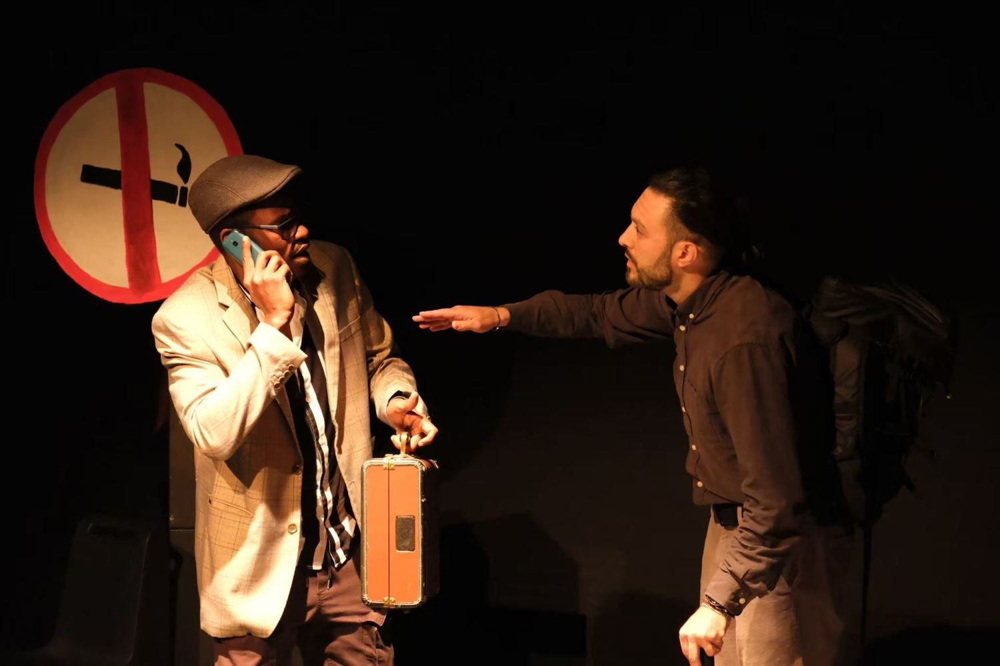

Home
by Waves on Board · 2026
- Role
- Director
- Form
- Devised improvisational theater
- Process
- Four-month workshop, seven performers
- Place
- Abu Dhabi, UAE
An improvisational theater project about belonging, home, migration and the feeling of being away from what we know. Seven performers from different countries, generations and life experiences built a collective performance through movement, storytelling and improvisation, unfolding in real time.
The performers created characters that carry echoes of themselves. Set in a transit airport after a sudden flight disruption, the story brings strangers together until a darker truth surfaces: a hidden human trafficking chain. Will they find the waves that connect them, and a home together on board?
- The professor
- The cook
- The spy
- The laundromat girl
- The mother





